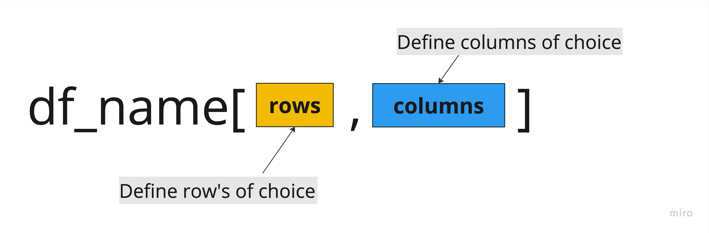
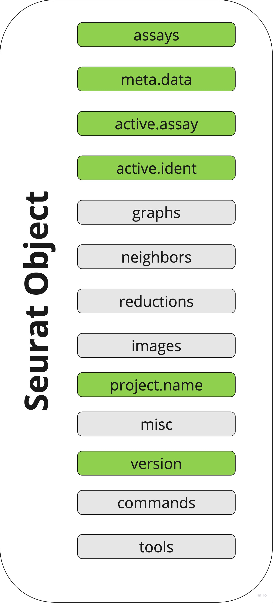
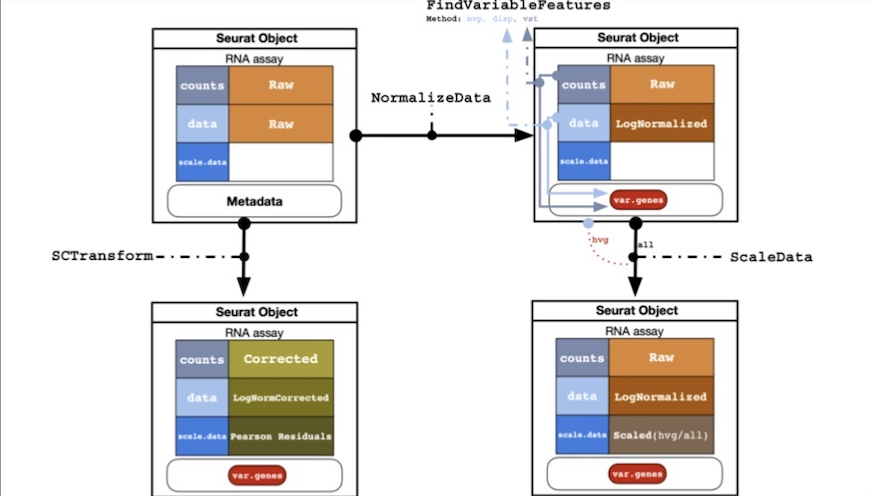

Precourse Preparation - R
Introduction
This tutorial will help you to understand the basic concepts in R. It will cover the following topics:
- Working with Dataframes
- Tidyverse library
- Understanding the Seurat object
1. Data frame
1.1 What is data frame
Data frame is data structure in R that store values of any type. You can think of it as a table with columns and rows storing the data as in below example.

Credit: https://www.geeksforgeeks.org/r-data-frames/
Often in data science language the columns are named as variables, the rows are observations and each entry in a table is a value.
Some of the most common examples of input files that can be loaded into R as data frames are spreadsheets, TSVs, CSVs files. TSV and CSV stands for tab-separated or coma-separated values.
Another way to view data frame is as list of vectors of the same length. The vector can be defined as type of data structure that contains elements of the same type. Below you can find example on how create the table presented in Figure 1 from vectors.
#define vectors which will create columns with data in data frame
## Vector of names
Name <- c("Avrey Bradley","John Holland","Jonas Jerebko","Jordan Midkey","Terry Rozier","Jared Sullinger","Evan Turner")
## Vector of team's names
Team <- c("Boston Celtics", "Boston Celtics","Boston Celtics","Boston Celtics","Boston Celtics","Boston Celtics","Boston Celtics")
## Vector of values
Number <- c(0.0,30.0,8.0,NaN,12.0,7.0,11.0)
## Vector of positions
Position <- c("PG","SG","PF","PF","PG","C","SG")
## Vector of age
Age <- c(25.0,27.0,29.0,21.0,22.0,NaN,27.0)
#create data frame from vectors
data.frame(Name,Team,Number,Position,Age) Name Team Number Position Age
1 Avrey Bradley Boston Celtics 0 PG 25
2 John Holland Boston Celtics 30 SG 27
3 Jonas Jerebko Boston Celtics 8 PF 29
4 Jordan Midkey Boston Celtics NaN PF 21
5 Terry Rozier Boston Celtics 12 PG 22
6 Jared Sullinger Boston Celtics 7 C NaN
7 Evan Turner Boston Celtics 11 SG 271.2 Convenient version of data frame: “Tibble”
The tibble is package that manipulate data frames. The tibble type of table looks like data frame but have some advantages over using regular data frames.
For example, while loading data as classical data frame, the spaces in names are conversed to periods or “x” before numeric columns is added. While using tibbles, the input names and types remain unchanged. In this tutorial we will work mainly with tibble data frame type.
1.3 Working with data frames in R
1.3.1 Example data
In this part of tutorial, we will work on table downloaded from supplementary data of Salcher, Stefan et al. publication (doi:10.1016/j.ccell.2022.10.008). The table contains the metadata of patients for which samples were processed on different single-cell platforms.
1.3.2 Loading data
Depending on the input format, there are different dedicated libraries to load data into R. Here we start from excel spreadsheet and use function from readxl library. The readxl library is part of tidyverse packages that will be covered in second chapter of this tutorial.
df_example <- read_excel("data/precourse_preparation_data/mmc4.xlsx", skip = 2)NOTE:
The two first rows in the table are empty and therefore skipped while loading.
One of the columns in excel spreadsheet is empty (column N). The R assign automatically the default name to that column and keep it within data frame.
All the missing entries in rows will be filled with “NA” values automatically.
1.3.3 Viewing the content
There are different ways to view the content of data frame. You can directly click on df_example to display the content.
The “str” function lists directly in the console: the type of data (tibble), dimensions (322x18), columns with first values displayed and type of values.
str(df_example)tibble [322 × 18] (S3: tbl_df/tbl/data.frame)
$ ...1 : num [1:322] 0 1 2 3 4 5 6 7 8 9 ...
$ study : chr [1:322] "Adams_Kaminski_2020" "Adams_Kaminski_2020" "Adams_Kaminski_2020" "Adams_Kaminski_2020" ...
$ dataset : chr [1:322] "Adams_Kaminski_2020" "Adams_Kaminski_2020" "Adams_Kaminski_2020" "Adams_Kaminski_2020" ...
$ patient : chr [1:322] "Adams_Kaminski_2020_001C" "Adams_Kaminski_2020_002C" "Adams_Kaminski_2020_003C" "Adams_Kaminski_2020_8CO" ...
$ uicc_stage : chr [1:322] NA NA NA NA ...
$ tumor_stage : chr [1:322] NA NA NA NA ...
$ sex : chr [1:322] "male" "female" "female" "male" ...
$ ever_smoker : chr [1:322] "no" "no" "no" "yes" ...
$ driver_genes : chr [1:322] NA NA NA NA ...
$ condition : chr [1:322] "non-cancer" "non-cancer" "non-cancer" "COPD" ...
$ age : num [1:322] 22 25 67 65 66 49 62 57 66 20 ...
$ platform : chr [1:322] "10x" "10x" "10x" "10x" ...
$ platform_fine : chr [1:322] "10x_3p_v2" "10x_3p_v2" "10x_3p_v2" "10x_3p_v2" ...
$ ...14 : logi [1:322] NA NA NA NA NA NA ...
$ tissue: normal : num [1:322] 1 1 1 1 1 1 1 1 1 1 ...
$ tissue: normal_adjacent : num [1:322] 0 0 0 0 0 0 0 0 0 0 ...
$ tissue: tumor_primary : num [1:322] 0 0 0 0 0 0 0 0 0 0 ...
$ tissue: tumor_metastasis: num [1:322] 0 0 0 0 0 0 0 0 0 0 ...1.3.4 Extracting information
Extracting data from an R data frame means to access its rows or columns. First let’s list all columns available in the dataset.
colnames(df_example) [1] "...1" "study"
[3] "dataset" "patient"
[5] "uicc_stage" "tumor_stage"
[7] "sex" "ever_smoker"
[9] "driver_genes" "condition"
[11] "age" "platform"
[13] "platform_fine" "...14"
[15] "tissue: normal" "tissue: normal_adjacent"
[17] "tissue: tumor_primary" "tissue: tumor_metastasis"To extract values from single column of the data frame different options can be used:
- Using $ operator and providing the column name
head(df_example$study) # head allows to display only 10 first elements [1] "Adams_Kaminski_2020" "Adams_Kaminski_2020" "Adams_Kaminski_2020"
[4] "Adams_Kaminski_2020" "Adams_Kaminski_2020" "Adams_Kaminski_2020"- Using [ , ] and providing the column number (index)
# A tibble: 6 × 1
study
<chr>
1 Adams_Kaminski_2020
2 Adams_Kaminski_2020
3 Adams_Kaminski_2020
4 Adams_Kaminski_2020
5 Adams_Kaminski_2020
6 Adams_Kaminski_2020- Using [[]] and providing column number (index)
[1] "Adams_Kaminski_2020" "Adams_Kaminski_2020" "Adams_Kaminski_2020"
[4] "Adams_Kaminski_2020" "Adams_Kaminski_2020" "Adams_Kaminski_2020"- Using column name
# A tibble: 6 × 1
study
<chr>
1 Adams_Kaminski_2020
2 Adams_Kaminski_2020
3 Adams_Kaminski_2020
4 Adams_Kaminski_2020
5 Adams_Kaminski_2020
6 Adams_Kaminski_2020To extract multiple columns or rows at the same time the following rules apply:

- Extract rows range, include all columns.
df_example[c(2:4),] #display rows from 2-4 and all columns# A tibble: 3 × 18
...1 study dataset patient uicc_stage tumor_stage sex ever_smoker
<dbl> <chr> <chr> <chr> <chr> <chr> <chr> <chr>
1 1 Adams_Kaminski… Adams_… Adams_… <NA> <NA> fema… no
2 2 Adams_Kaminski… Adams_… Adams_… <NA> <NA> fema… no
3 3 Adams_Kaminski… Adams_… Adams_… <NA> <NA> male yes
# ℹ 10 more variables: driver_genes <chr>, condition <chr>, age <dbl>,
# platform <chr>, platform_fine <chr>, ...14 <lgl>, `tissue: normal` <dbl>,
# `tissue: normal_adjacent` <dbl>, `tissue: tumor_primary` <dbl>,
# `tissue: tumor_metastasis` <dbl>- Extract rows, include all columns.
df_example[c(2,4),] #display rows 2 and 4 and all columns# A tibble: 2 × 18
...1 study dataset patient uicc_stage tumor_stage sex ever_smoker
<dbl> <chr> <chr> <chr> <chr> <chr> <chr> <chr>
1 1 Adams_Kaminski… Adams_… Adams_… <NA> <NA> fema… no
2 3 Adams_Kaminski… Adams_… Adams_… <NA> <NA> male yes
# ℹ 10 more variables: driver_genes <chr>, condition <chr>, age <dbl>,
# platform <chr>, platform_fine <chr>, ...14 <lgl>, `tissue: normal` <dbl>,
# `tissue: normal_adjacent` <dbl>, `tissue: tumor_primary` <dbl>,
# `tissue: tumor_metastasis` <dbl>- Extract columns range, include all rows.
# A tibble: 6 × 3
study dataset patient
<chr> <chr> <chr>
1 Adams_Kaminski_2020 Adams_Kaminski_2020 Adams_Kaminski_2020_001C
2 Adams_Kaminski_2020 Adams_Kaminski_2020 Adams_Kaminski_2020_002C
3 Adams_Kaminski_2020 Adams_Kaminski_2020 Adams_Kaminski_2020_003C
4 Adams_Kaminski_2020 Adams_Kaminski_2020 Adams_Kaminski_2020_8CO
5 Adams_Kaminski_2020 Adams_Kaminski_2020 Adams_Kaminski_2020_23CO
6 Adams_Kaminski_2020 Adams_Kaminski_2020 Adams_Kaminski_2020_034C- Extract columns, include all rows.
# A tibble: 6 × 2
study patient
<chr> <chr>
1 Adams_Kaminski_2020 Adams_Kaminski_2020_001C
2 Adams_Kaminski_2020 Adams_Kaminski_2020_002C
3 Adams_Kaminski_2020 Adams_Kaminski_2020_003C
4 Adams_Kaminski_2020 Adams_Kaminski_2020_8CO
5 Adams_Kaminski_2020 Adams_Kaminski_2020_23CO
6 Adams_Kaminski_2020 Adams_Kaminski_2020_034C- Exercise
Extract rows from 5-10 and columns from 3-8.
1.3.4 Modifying information
The columns or rows can be removed or added to data frame as needed. It is possible to drop specific columns indicating the column indexes.
modified_df_example <- df_example[, -c(1,2,5)] # Drop columns 1,2,5 and include all columns
modified_df_example %>% head # data frame with excluded columns # A tibble: 6 × 15
dataset patient tumor_stage sex ever_smoker driver_genes condition age
<chr> <chr> <chr> <chr> <chr> <chr> <chr> <dbl>
1 Adams_Kami… Adams_… <NA> male no <NA> non-canc… 22
2 Adams_Kami… Adams_… <NA> fema… no <NA> non-canc… 25
3 Adams_Kami… Adams_… <NA> fema… no <NA> non-canc… 67
4 Adams_Kami… Adams_… <NA> male yes <NA> COPD 65
5 Adams_Kami… Adams_… <NA> male yes <NA> COPD 66
6 Adams_Kami… Adams_… <NA> male yes <NA> non-canc… 49
# ℹ 7 more variables: platform <chr>, platform_fine <chr>, ...14 <lgl>,
# `tissue: normal` <dbl>, `tissue: normal_adjacent` <dbl>,
# `tissue: tumor_primary` <dbl>, `tissue: tumor_metastasis` <dbl>The same principle apply to excluding the rows
modified_df_example <- df_example[-c(1,2,5),] # Drop rows 1,2,5 and include all columns
modified_df_example %>% head# A tibble: 6 × 18
...1 study dataset patient uicc_stage tumor_stage sex ever_smoker
<dbl> <chr> <chr> <chr> <chr> <chr> <chr> <chr>
1 2 Adams_Kaminski… Adams_… Adams_… <NA> <NA> fema… no
2 3 Adams_Kaminski… Adams_… Adams_… <NA> <NA> male yes
3 5 Adams_Kaminski… Adams_… Adams_… <NA> <NA> male yes
4 6 Adams_Kaminski… Adams_… Adams_… <NA> <NA> fema… yes
5 7 Adams_Kaminski… Adams_… Adams_… <NA> <NA> fema… yes
6 8 Adams_Kaminski… Adams_… Adams_… <NA> <NA> fema… no
# ℹ 10 more variables: driver_genes <chr>, condition <chr>, age <dbl>,
# platform <chr>, platform_fine <chr>, ...14 <lgl>, `tissue: normal` <dbl>,
# `tissue: normal_adjacent` <dbl>, `tissue: tumor_primary` <dbl>,
# `tissue: tumor_metastasis` <dbl>We can remove column with specific name. To drop column, we chose all the columns (called by “colnames”) except (!=) “patient”.
modified_df_example <- df_example[ , colnames(df_example) != "patient"] # Drop column "patient"
modified_df_example %>% head# A tibble: 6 × 17
...1 study dataset uicc_stage tumor_stage sex ever_smoker driver_genes
<dbl> <chr> <chr> <chr> <chr> <chr> <chr> <chr>
1 0 Adams_Kam… Adams_… <NA> <NA> male no <NA>
2 1 Adams_Kam… Adams_… <NA> <NA> fema… no <NA>
3 2 Adams_Kam… Adams_… <NA> <NA> fema… no <NA>
4 3 Adams_Kam… Adams_… <NA> <NA> male yes <NA>
5 4 Adams_Kam… Adams_… <NA> <NA> male yes <NA>
6 5 Adams_Kam… Adams_… <NA> <NA> male yes <NA>
# ℹ 9 more variables: condition <chr>, age <dbl>, platform <chr>,
# platform_fine <chr>, ...14 <lgl>, `tissue: normal` <dbl>,
# `tissue: normal_adjacent` <dbl>, `tissue: tumor_primary` <dbl>,
# `tissue: tumor_metastasis` <dbl>The new columns can be added to data frame. To add new column, use $ to indicate the column name for a new column as in the example below.
Here we assign the values from already existing column to a new column. The new column is added at the end of the data table.
df_example$technology_type <- df_example$platform # add new column named "technology_type" with values from "platform" existing column
df_example[,ncol(df_example)] %>% head #show all rows and last column# A tibble: 6 × 1
technology_type
<chr>
1 10x
2 10x
3 10x
4 10x
5 10x
6 10x The values from chosen column can be replaced with other values. In example below we search in df_example data frame in technology_type column for rows that contain “BD-Rhapsody” text. For those values we assign “microwell-based”.
df_example$technology_type[df_example$technology_type == "BD-Rhapsody"] <- "microwell-based"
df_example$technology_type[df_example$technology_type == "10x"] <- "droplet-based"
df_example[,c("platform","technology_type")] %>% head #display columns# A tibble: 6 × 2
platform technology_type
<chr> <chr>
1 10x droplet-based
2 10x droplet-based
3 10x droplet-based
4 10x droplet-based
5 10x droplet-based
6 10x droplet-based The last useful function to cover in this chapter is summary(). The function gives the statistical summary of each of the columns when applied on data frame. It can be applied on slice of data as for example only on one column or chosen columns and rows.
summary(df_example) ...1 study dataset patient
Min. : 0.00 Length:322 Length:322 Length:322
1st Qu.: 80.25 Class :character Class :character Class :character
Median :160.50 Mode :character Mode :character Mode :character
Mean :160.50
3rd Qu.:240.75
Max. :321.00
uicc_stage tumor_stage sex ever_smoker
Length:322 Length:322 Length:322 Length:322
Class :character Class :character Class :character Class :character
Mode :character Mode :character Mode :character Mode :character
driver_genes condition age platform
Length:322 Length:322 Min. :20.00 Length:322
Class :character Class :character 1st Qu.:56.00 Class :character
Mode :character Mode :character Median :63.00 Mode :character
Mean :60.73
3rd Qu.:69.00
Max. :90.00
NA's :89
platform_fine ...14 tissue: normal tissue: normal_adjacent
Length:322 Mode:logical Min. :0.0000 Min. :0.0000
Class :character NA's:322 1st Qu.:0.0000 1st Qu.:0.0000
Mode :character Median :0.0000 Median :0.0000
Mean :0.2267 Mean :0.3261
3rd Qu.:0.0000 3rd Qu.:1.0000
Max. :1.0000 Max. :1.0000
tissue: tumor_primary tissue: tumor_metastasis technology_type
Min. :0.0000 Min. :0.0000 Length:322
1st Qu.:0.0000 1st Qu.:0.0000 Class :character
Median :1.0000 Median :0.0000 Mode :character
Mean :0.5497 Mean :0.1398
3rd Qu.:1.0000 3rd Qu.:0.0000
Max. :1.0000 Max. :1.0000
summary(df_example$age) Min. 1st Qu. Median Mean 3rd Qu. Max. NA's
20.00 56.00 63.00 60.73 69.00 90.00 89 2. Tidyverse
Data often need to be re-shaped, re-arranged, and re-formatted, so that they can be visualized or used in downstream analysis. Throughout this chapter you will learn how to use the tidyverse library to navigate through and adjust the tables you work with.
The tidyverse is collection of R packages. The core packages included in tidyverse are ggplot2, tidyr, readr, dplyr, stringr, purrr, and forcats. Each of the packages is dedicated to handle different operations. In below graphics you can find a summary of all packages and their core functionalities.

Credit: https://www.storybench.org/getting-started-with-tidyverse-in-r/
In this chapter we will cover some of the functions included in tidyverse library and used during workshop. If you would like to learn more about tidyverse and additional libraries, we encourage you to visit official website https://www.tidyverse.org/.
When tidyverse is loaded you will see the list of packages included and loaded with tidyverse.
After loading tidyverse, the R inform you about conflicting packages. The reason is there are other packages already loaded by default in R.
Packages consist of a collection of functions related to a particular purpose. Those functions can have naming conflicts with functions from other packages.
The two functions from stats package: filer and lag, exist as well in tidyverse. After loading tidyverse package, the functions from stats package are masked and by default the tidyverse functions will be used. If you would like to use filter() or lag() functions from stats package, you should indicate the package name as in example below.
stats::filter()
# Function in this example are empty for illustration purposes. To use that function you need to provide arguments inside.Without indicating the package name in front of function name, R will use the package that was loaded the most recently in your R session.
2.1 Pipe
A pipe is a type of operator in R %>%. It takes the output of one function and passes it as the first argument of the next function, allowing us to chain together several steps in R.

Credit: tidyverse.org
The pipe sends the data on left side of the pipe to be the first argument of the function on the right side of the pipe.
We can pipe multiple functions together. The operations are performed from the left to the right sequentially.
Below you can find exercises with more examples of piping mathematical functions in R together.
- Answer:
sqrt(26-22) + 42.2 Example data
In this chapter we will work on an expression matrix table which is in CSV format. Below is example of how to load the table.
expMat <- fread(file = "data/precourse_preparation_data/Demo-WTA-AbSeq.csv", sep = ",", header=TRUE)
# file: provide full directory to file
# sep: indicate separator, in this case coma
# header = True is indicating to take the first row as a column namesDisplaying first rows and columns of the table gives us a glimpse on what the data contain.
V1 A1BG A1BG.AS1 A1CF A2M
1: 3261781 0 0 0 0
2: 9155806 0 0 0 0
3: 4304661 0 0 0 0
4: 2216902 0 0 0 0
5: 13160139 0 0 0 0The gene names are displayed in columns and rows contain information about the cells. The column named V1 hold information about the cell index that is given to each cell in primary analysis.
We will set the V1 column as row names. In that way all the columns will contain the gene or protein counts.
#use first column as row names
expMat <- data.frame(expMat, row.names = 1)The same set of above operations can be performed with pipe in one line of code. We read the file and convert first column to row names and save as data frame. The result is assigned to expMat variable by using the arrow.
#pipe operations
expMat <- fread(file = "data/precourse_preparation_data/Demo-WTA-AbSeq.csv", sep = ",", header=TRUE) %>% data.frame(row.names = 1)2.3 select()
Functionality: Select only the columns (variables) that you want to see. Gets rid of all other columns.
Imagine you are interested to extract the data only for one gene existing in your dataset. You can use the gene name, for example “CD4”, to indicate in select function which column should be selected.
In the table we work on, the protein and gene expression information are provided. All the protein markers are labeled with “pAbO” abbreviation, in addition to marker name. We can select all the columns that contain pAbO in name and save to new table.
All the columns that does not contain the “pAbO” are representing genes. To create a gene data, we can use the contains() function with exclamation mark as in below example.
The “!” is used for negation in R language and is interpreted as “do not”. Below expression will be interpreted as “select from expMat columns that do not contain pAbO.”.
2.4 mutate()
Functionality: Adds new columns or modifies current variables in the dataset.
The mutate function allows in easy way to add new columns in existing tables. Let’s say we want to add column named “measurement_type” and fill with “protein expression” in abseq data table we created in previous step.
The new column will be added at the end of table. We can show the column by selecting the column name.
data_modality
3261781 protein_expression
9155806 protein_expression
4304661 protein_expression
2216902 protein_expression
13160139 protein_expression
11951658 protein_expressionMutate function can be used in combination with other functions.
In this example we will calculate sum of expression count for each cell and store information in table. We summarize the counts from all rows ad add as a new column. The rowSums function is useful for calculating the sum of counts in each row.
3261781 9155806 4304661 2216902 13160139 11951658
35231 34733 33238 31618 31664 30786 After running rowSums we got for each cell the number of counts. The values can be added in mrna data table as a new column.
mrna_data %>% mutate(counts = mRNA_count_sum) -> mrna_data
mrna_data %>% dplyr::select(counts) %>% head counts
3261781 35231
9155806 34733
4304661 33238
2216902 31618
13160139 31664
11951658 30786The same result can be generated with option below, where the rowSums function is nested inside the mutate function.
Notice that mrna_data is given twice in that case as an argument. The mrna_data is taken by mutate function as first argument and then in rowSums function as second argument.
In above example we used pipe to direct the mrna_data to mutate() function as argument. However the mrna_data was not forwarded by pipe to rowSums. For that reason we had to type it in the rowSums function. By default pipe operator forwards data only as first argument to a function. If you want the pipe to forward data as well as second (and next) argument to function you can use a dot.
2.5 summarise()
Functionality: Collapses all rows and returns a one-row summary.
In the example below, summarize function allow us to calculate the max/min, median and mean values for counts.
mrna_data %>% dplyr::summarise(mean = mean(counts), #mean counts
median = median(counts), #median counts
max = max(counts), #maximum count
min = min(counts)) #minimum count mean median max min
1 9142.064 4392 105693 1146In above summary we have the overview of the expression range and how minimum and maximum values of molecules expressed differ. Some of cells will have very low transcriptome size in comparison to others.
2.6 if_else()
The if_else() function in R is a conditional function. It allows to test the hypothesis and perform actions based on answer.
Let’s assume we want to label the cells according to transcriptom size. Based on threshold of counts we give a label of “low_transcriptome” or “high_transcriptome” for a cell status. We can make assumption that all cells with sum of counts lower then thousand are low transcriptome cells and remaining cells are categorized as high transcriptome cells.
The if_else function with combination of mutate will help us to achieve the goal.
First we need to know what is the structure of if_else statement. The first argument of if_else function is the hypotheses or the statement. In our case we want to test if count for cell is below or above the threshold. Second argument of a function is an action to perform if the statement is true. Third argument of if_else function is an action to perform when the statement is false.

In our case the hypothesis to test is if counts in a cell are below or above the threshold. We can set the condition to have a counts above 2000. If the counts are above the threshold the statement is true. When the statement is true the action is to set the label as “high_transcriptome”. When the statement is false we set the label as “low_transciptome”.
if_else(mrna_data$counts > 2000, "high_transcriptome", "low_transcriptome") -> cell_statusIn that way we created a cell status for cells based on counts. We should see in a cell_status that was generated two labels. To verify if that is the case we can display unique values of a created vector.
unique(cell_status)[1] "high_transcriptome" "low_transcriptome" If we would like to add that information as a new column to data table, we can use mutate function as in previous examples.
#calcuate and add cell_status to mrna table
mrna_data %>% mutate(cell_status = if_else(mrna_data["counts"] > 2000, "high_transcriptome", "low_transcriptome")) -> mrna_data
#display cell status column
mrna_data %>% dplyr::select(cell_status) %>% head cell_status
3261781 high_transcriptome
9155806 high_transcriptome
4304661 high_transcriptome
2216902 high_transcriptome
13160139 high_transcriptome
11951658 high_transcriptome2.7 count()
Functionality: Collapses the rows and counts the number of observations per group of values.
The count function is a quick way to have an overview on number of occurrences. For example to we can use count() to see how many cells were categorized as low or high transcriptome cells.
2.8 group_by()
Functionality: Takes existing data and groups specific variables together for future operations.
The function takes an existing table and convert it into grouped table where operations are performed by group.
Let’s have a look into following example and assume that we want to compare the mean and median counts for low and high transcriptome cells. In that case we can group data by cell status and calculate average values for those groups.
mrna_data %>%
group_by(cell_status) %>%
summarize(mean = mean(counts),
median = median(counts),
n = n()) #calculates the total number of observations# A tibble: 2 × 4
cell_status mean median n
<chr> <dbl> <dbl> <int>
1 high_transcriptome 10006. 4684. 5204
2 low_transcriptome 1611. 1638 597In the above code, we have grouped by cell status, meaning that calculations performed on our data will account for high transcriptome and low transcriptome cells separately. Following code execution, the console displays the mean count, the median count and the total number of cells (n()) for low transcriptome and for high transcriptome cells (group_by(cell_status)).
2.8 filter()
Functionality: Only retain specific rows of data that meet the specified requirement(s).
Filter function display from the data values that meet defined condition. For example, we can filter all cells with low transcriptome cell status and retain only high transcriptome cells.
2.9 rename()
Functionality: Renames a column/variable by name and index.
Renames the cell_status variable as SIGNAL_CELLS (notice that the new label goes first in the argument).
mrna_data %>% rename(SIGNAL_CELLS = cell_status) -> mrna_data
#display results
mrna_data %>% dplyr::select(last_col()) %>% head #chose last column from mrna_data SIGNAL_CELLS
3261781 high_transcriptome
9155806 high_transcriptome
4304661 high_transcriptome
2216902 high_transcriptome
13160139 high_transcriptome
11951658 high_transcriptome3. Seurat object
Seurat object is a data structure designed for storing single-cell genomics data and associated information. We can think about Seurat object as a box with different sections to keep single-cell data in organized manner.
In this chapter we will have a look in what information we can find in Seurat object and how to categorize them.
3.1 Seurat Object Structure
Seurat object stores information about the single cell multiomics data and the analysis that was done during downstream workflow. As we move through the workflow and make calculations, the results are added to Seurat object and stored in different “boxes”. Those different “boxes” are called slots.
Let’s load the Seurat object into R.
seuratObj <- readRDS("data/precourse_preparation_data/seuratObj.rds")Loaded Seurat object was created including mRNA counts table obtained from primary analysis. While Seurat object is generated the following information are added to Seurat slots by default: assays, meta data, active assay, active identity, project name and version.

The remaining Seurat slots highlighted in grey are empty and filled in with information while it is calculated over analysis.
You can open the Seurat object in separate tab and review its content.
3.2 Assays
The assays slot contain different assays loaded into Seurat object. Those can be for example mRNA expression data or protein expression data. The assay slot is described by additional subslots that stores ‘transformations’ of the data, including raw counts (counts slot), normalized data (data slot), and scaled data for dimensional reduction (scale.data slot).
The assays slots can be accessed by function GetAssayData. In example below we access the counts slot.
#Seurat object saved before normalization
GetAssayData(object = seuratObj, slot = "counts") %>%
.[1:5 , c("6660551","2066735","9164959","3709837")]5 x 4 sparse Matrix of class "dgCMatrix"
6660551 2066735 9164959 3709837
A1BG . 1 . .
A1BG.AS1 1 . 1 .
A1CF . . . .
A2M . . . 2
A2M.AS1 . . . .We can perform normalization and store the normalized counts in data slot.
#Seurat object saved after normalization
NormalizeData(seuratObj) %>%
GetAssayData(object = ., slot = "data") %>%
.[1:5 , c("6660551","2066735","9164959","3709837")]5 x 4 sparse Matrix of class "dgCMatrix"
6660551 2066735 9164959 3709837
A1BG . 0.3399948 . .
A1BG.AS1 0.330402 . 0.3532289 .
A1CF . . . .
A2M . . . 0.6642082
A2M.AS1 . . . . By running above example you can see the raw values in data slot are changed due to LogTransform normalization.
Below you can find a useful graphics indicating how data are altered in assays slots in Seurat object after applying different functions related to normalization and scaling the data.

Credit: Lior Pachter https://twitter.com/lpachter/status/1524413513233575936
3.3 Meta Data
meta.data slot stores information calculated for cells as for example number of features in each cell, number of counts or cell clusters calculated in downstream process.
The meta.data information is stored in a table that can be accessed in Seurat object as below.
seuratObj@meta.data %>% head orig.ident nCount_RNA nFeature_RNA
3261781 SeuratProject 35231 5823
9155806 SeuratProject 34733 5943
4304661 SeuratProject 33238 5480
2216902 SeuratProject 31618 5573
13160139 SeuratProject 31664 5592
11951658 SeuratProject 30786 5457To view list of all available meta.data in Seurat object we can view the column names from the data table.
It is possible to add new information to meta data. It can be any information about the cells as experimental batch or sub-population identity.
#add meta data
seuratObj <- AddMetaData(seuratObj, #indicate object
"experiment_1", #metadata to be added
"batch") #column name for metadata
#display results
seuratObj@meta.data %>% head orig.ident nCount_RNA nFeature_RNA batch
3261781 SeuratProject 35231 5823 experiment_1
9155806 SeuratProject 34733 5943 experiment_1
4304661 SeuratProject 33238 5480 experiment_1
2216902 SeuratProject 31618 5573 experiment_1
13160139 SeuratProject 31664 5592 experiment_1
11951658 SeuratProject 30786 5457 experiment_14. References and Resources
https://www.geeksforgeeks.org/r-data-frames/
https://bookdown.org/yih_huynh/Guide-to-R-Book/tidyverse.html
https://silviacanelon.com/talk/2020-tour-of-the-tidyverse/
https://oliviergimenez.github.io/intro_tidyverse/
https://jhudatascience.org/tidyversecourse/get-data.html
https://www.analyticsvidhya.com/blog/2019/05/beginner-guide-tidyverse-most-powerful-collection-r-packages-data-science/